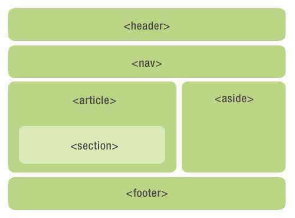

HTML5 意味要素
意味 = 意義 はフォーマットの例のみです。翻訳したい実際の中国語テキストを番号付きで送信してください。
意味要素 = 意味のある要素
意味要素とは何か？
意味要素は、その意味をブラウザと開発者に明確に説明できます。
意味を持たない要素の例: <div> と <span> - 内容を考慮する必要はありません。
意味要素の例: <form>、<table>、<img> - その内容を明確に定義しています。
ブラウザサポート


Internet Explorer 9以上、Firefox、Chrome、Safari、Opera は意味要素をサポートしています。
注意：Internet Explorer 8 およびそれ以前のバージョンはこの要素をサポートしていません。ただし、記事の下部に互換性の解決策が用意されています。
HTML5の新しい意味要素
多くの既存のウェブサイトには、以下のHTMLコードが含まれています： <div id="nav">、<div class="header">、または <div id="footer">、 ナビゲーションリンク、ヘッダー、フッターを示すためです。
HTML5 は、Webページのさまざまな部分を明確にするための新しい意味要素を提供しています。
- <header>
- <nav>
- <section>
- <article>
- <aside>
- <figcaption>
- <figure>
- <footer>

HTML5 <section> 要素
<section> タグは、ドキュメント内の節（section、区間）を定義します。たとえば、章、ヘッダー、フッター、またはドキュメントの他の部分などです。
W3C HTML5 ドキュメントによると: section は一連のコンテンツとその見出しを含みます。
HTML5 <article> 要素
<article> タグは独立したコンテンツを定義します。
<article> 要素の使用例：
- Forum post
- Blog post
- News story
- Comment
例
試してみる »
HTML5 <nav> 要素
<nav> タグは、ナビゲーションリンクの部分を定義します。
<nav> 要素はページのナビゲーションリンク部分の領域を定義するために使用されますが、すべてのリンクを <nav> 要素に含める必要はありません。
例
試してみる »
HTML5 <aside> 要素
<aside> タグは、ページのメイン領域のコンテンツ以外のコンテンツ（サイドバーなど）を定義します。
aside タグの内容は、メイン領域の内容と関連している必要があります。
例
試してみる »
HTML5 <header> 要素
<header> 要素はドキュメントのヘッダー領域を記述します。
<header> 要素は主に、コンテンツの紹介表示領域を定義するために使用されます。
ページ内で複数の <header> 要素を使用できます。
次の例は、記事のヘッダーを定義しています。
例
試してみる »
HTML5 <footer> 要素
<footer> 要素は、ドキュメントのフッター領域を記述します。
<footer> 要素は、自身を含む要素（親要素）に関する情報を含むべきです。
フッターには通常、ドキュメントの作者、著作権情報、利用規約へのリンク、連絡先情報などが含まれます。
ドキュメント内で複数の <footer> 要素を使用できます。
例
試してみる »
HTML5 <figure> と <figcaption> 要素
<figure> タグは、独立したフローコンテンツ（画像、図表、写真、コードなど）を定義します。
<figure> 要素の内容はメインコンテンツと関連している必要がありますが、削除された場合、ドキュメントのフローに影響を与えるべきではありません。
<figcaption> タグは <figure> 要素のキャプション（見出し）を定義します。
<figcaption> 要素は、"figure" 要素の最初または最後の子要素の位置に配置されるべきです。
例
試してみる »
これらの意味要素を使い始めることはできますか？
上記の要素はすべてブロック要素です（<figcaption> を除く）。
これらのブロックレベル要素をすべてのバージョンのブラウザで機能させるには、スタイルシートファイルで以下のプロパティを設定する必要があります（以下のスタイルコードにより、古いバージョンのブラウザでこの章で紹介したブロックレベル要素をサポートできます）：
{
display: block;
}
Internet Explorer 8 およびそれ以前のIEバージョンの問題
IE8 およびそれ以前のIEバージョンでは、これらの要素にCSS効果をレンダリングできないため、<header>、<section>、<footer>、<aside>、<nav>、<article>、<figure> などのHTML5要素を使用できません。
解決策：HTML5 Shiv Javascript スクリプトを使用して、IEの互換性の問題を解決できます。HTML5 Shiv のダウンロード先：https://lf26-cdn-tos.bytecdntp.com/cdn/expire-1-M/html5shiv/3.7.3/html5shiv.min.js
ダウンロード後、以下のコードをWebページに配置します：
<script src="html5shiv.js"></script>
<![endif]-->
上記のコードは、ブラウザがIE9より古いバージョンの場合に html5shiv.js ファイルを読み込みます。このコードは <head> 要素内に配置する必要があります。IEブラウザは、ヘッダーに読み込んだ後にこれらのHTML5の新要素をレンダリングする必要があるためです。
その他の拡張